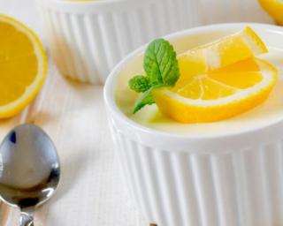

Recettes anti-inflammatoires
Découvrer des recettes permettant de diminuer l'inflammation de manière naturelle.
Voir recettesRecettes vegan
Découvrer des recettes vegan, adopté une alimentation saine, riches en vitamines et minéraux.
Voir recettes

Dessert light
Découvrir des desserts gourmands mais peu caloriques, se faire plaisir sans culpabiliser.
Voir recettes